About Mahabalipuram
Mahabalipuram - Mamallapuram Or Seven Pagodas
You must have read fables and tales about Mahabalipuram in Upanishads and novels. A small town on a strip of land between the Bay of Bengal and the Great Salt Lake attracts tourists and pilgrims because of its historical temples and alluring sunsets. These places to visit in Mahabalipuram tell a tale that is thousands of years old. If you happen to be in Tamil Nadu for a vacation, then you should definitely put this place on your bucket list. You will be thankful for every second that you spend here admiring the architecture, art, and culture of the small Tamilian town.
Popular Places In Mahabalipuram
There are plenty of tourist attractions in Mahabalipuram that will keep you busy with sightseeing in this city of temples. All of these places are famed for their iconic and brilliant structures. You must definitely add the below-listed tourist places in Mahabalipuram to your Tamil Nadu itinerary for a memorable and fun vacation.
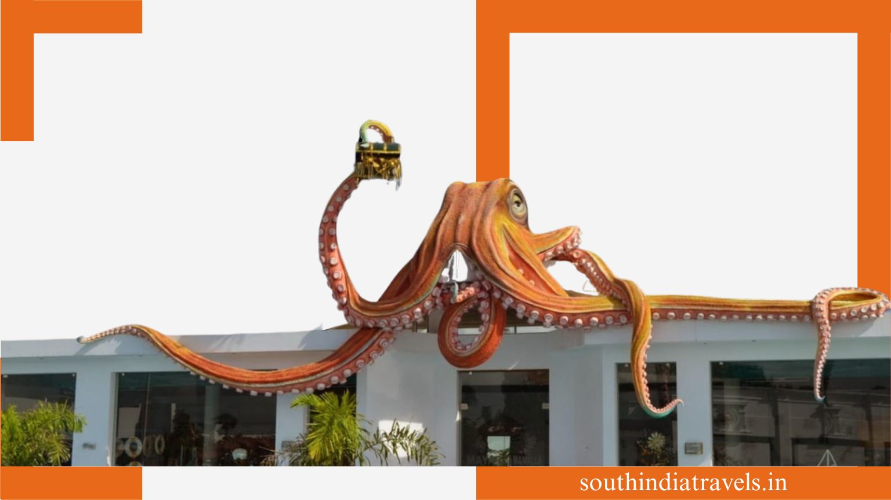
INDIA SEASHELL MUSEUM
If you are in Mahabalipuram, India Seashell Museum is one of the places to visit in Mahabalipuram Tamil Nadu. This museum houses seashells, conch, and other natural substances obtained from the sea. It also has a beautiful aquarium that has a variety of sea creatures like fishes, starfishes, sharks, etc. It would easily take about an hour or two to go around this place. One can also find a curator who would take you around and give a detailed explanation of the museum.
SHORE TEMPLES
There is a group of temples in Mahabalipuram that one must certainly go to. A couple of temples are deep inside the water and you can choose to cruise in the ocean and discover those underwater temples. These temples hold great historical significance to the locals here. When the water levels are low, the hidden temples come to the surface. Since they are located in the Bay of Bengal, it is coined as Shore temples. It belonged to the 8th century AD and was constructed by the Pallava dynasty. These temples are the best places to visit in Mahabalipuram.
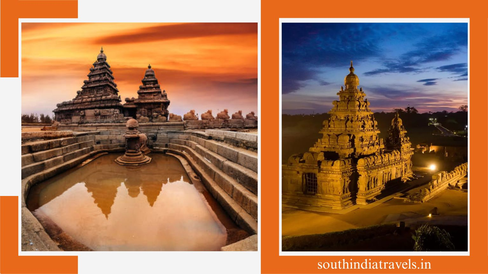
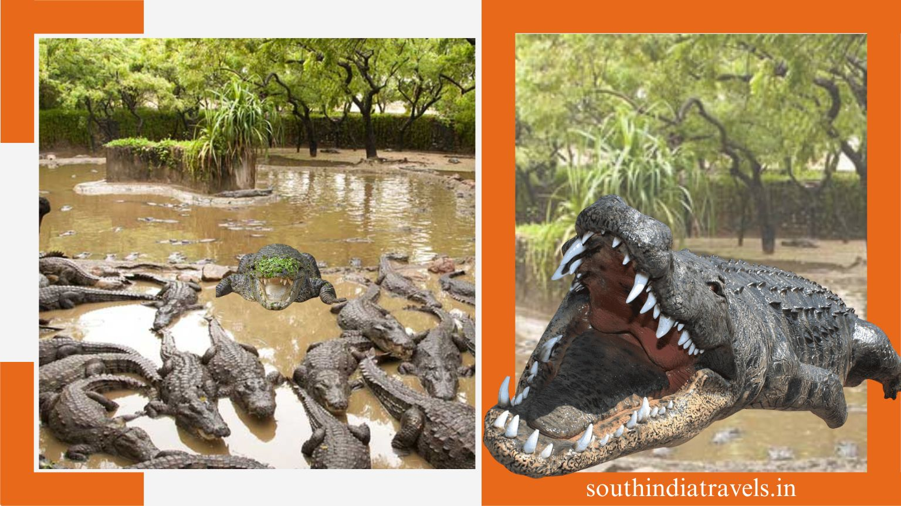
CROCODILE BANK
Looking for some places to visit in Mahabalipuram next? Don’t forget to visit the exciting Crocodile Bank situated about 14 km from Mahabalipuram main city. Established by herpetologist Romulus Whitaker in 1976, this conservation center holds a diverse species of Indian and African alligators, crocodiles, and even snakes. You’ll be able to spot these ferocious beings out in open pools here that have been made to resemble their natural habitat. The snake farm located right next to this center has a laboratory where antivenom is produced, helping the local snake catcher tribes make a living.
COVELONG BEACH
A popular tourist hub on the coastline of the Bay of Bengal, the famous Covelong Beach is located in Covelong Village, a few miles away from the main city of Mahabalipuram. This charming retreat is one of the best beaches near Chennai for nature lovers, beach bums, and couples who wish to spend quality time on its silver sands, palm trees, and crashing waves. Once entangled in long-drawn political squabbles, this beach has now been transformed into one of the most happening picnic spots near Chennai. Another interesting factor that draws people to this village is that it has India’s first surfing school, which makes it one of the top places to see in Mahabalipuram.
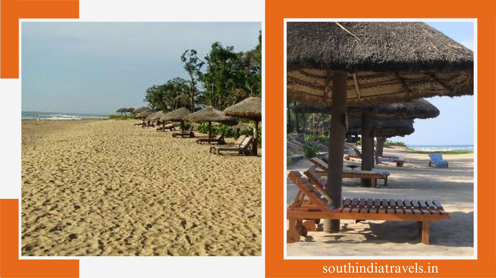
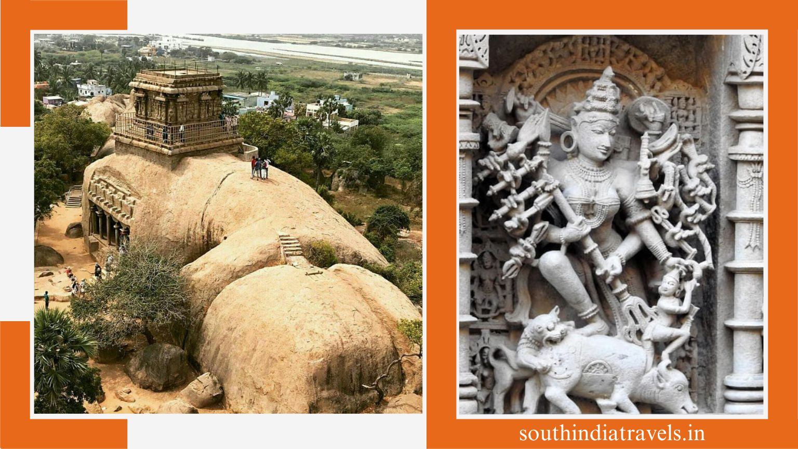
MAHISHASURA MARDINI CAVE TEMPLE
Mahishasura Mardini Cave Temple is the epitome of 7th-century Indian architecture. This monument is also known as Yampuri and is a rock-cut structure that leaves one in awe because of its aesthetics. One of the beautiful places to visit in Mahabalipuram, Mahishasura Mardini Cave Temple, adorns carvings of Hindu mythology. It showcases Lord Vishnu on his seven-hooded serpent and Lord Durga sitting on her lion as she slays the demon Mahishasur. A magnet for Hindu devotees and pilgrims, this structure also has scenes of Puranas depicted on the cave walls. This temple is sitting atop a hill and offers impeccable views of the surroundings.
TRIMURTI CAVE
As the name suggests, Trimurti Cave blankets the rock-cut formation of the three gods of Hindu mythology. These gods were the creator, aka Brahma; the god of preservation, aka Vishnu; and the god of destruction, aka Shiva. The other cave temples that cover the floors of Mahabalipuram have pillared mandaps, but this one opens directly to the shrines of the three gods. One of the interesting places to see in Mahabalipuram, Tirumati Cave, is also home to the shrine of Goddess Durga on her lion as she slays the demon Mahishasura.
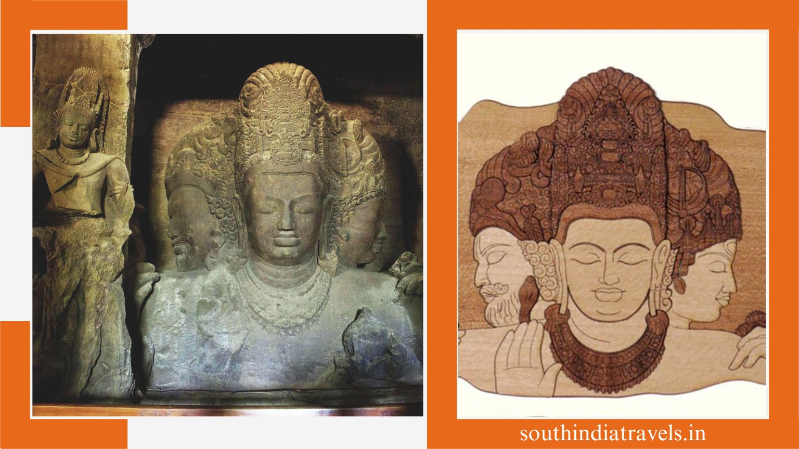
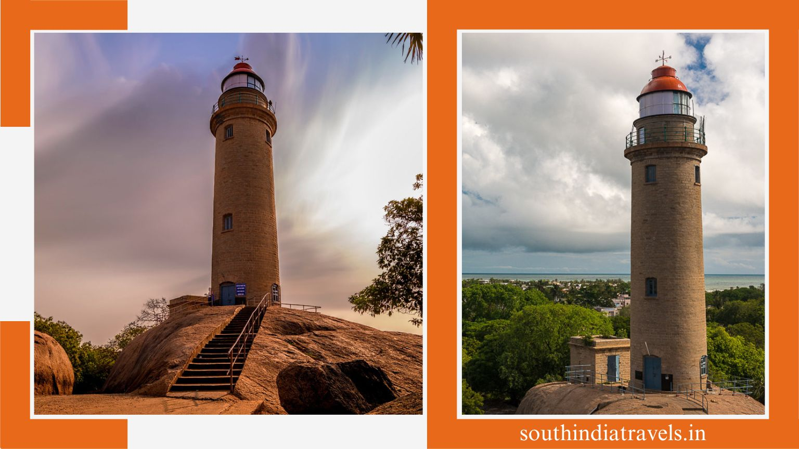
MAMALLAPURAM LIGHTHOUSE
The lighthouse is one of the must-visit places to see in Mahabalipuram. This particular beauty was constructed back in the 20th century. But the lighthouse was only open to the public in 2011. The structure of the lighthouse is built using natural stones. The best part about this lighthouse is that the travelers are given permission to climb up the stoney stairs. Once atop, the panoramic views of the surroundings are a real treat for both the eyes and souls of spectators. It is truly an experience that is worth every capture!
SCULPTURE MUSEUM
The Sculpture Museum at Mahabalipuram is a depiction of various figures, like gods and goddesses, from Hindu mythology. The stone sculptures, wooden carvings, and paintings are worth a visit. The gallery here has around 3000 sculptures that have strong mythological and historical relevance. The sculptures here include those made of metal, brass, wood, and cement. You can learn more about the strong culture of Mahabalipuram, which dates back to the times of the Gupta dynasty. There are creations of ancient creators as well as contemporary artists. Located on East Raja Street, the Sculpture Museum is one of the must-visit attractions in the city.
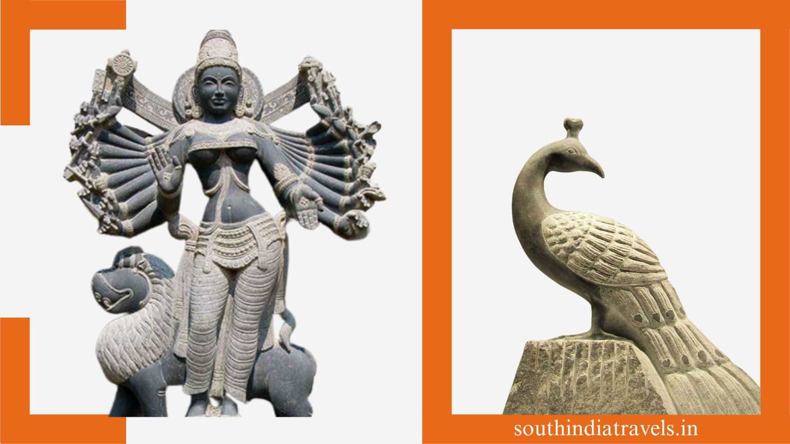

FIVE RATHAS
Five Rathas is one of those historical places that one must certainly go to during their visit to Mahabalipuram. The five Rathas link back to the era of the great Indian epic Mahabharata and the five Pandavas, and visiting them is one of the best things to do in Mahabalipuram. If one wants to get a true glimpse of Dravidian architecture, then you must take a tour around these rathas, or chariots. The sight of the huge elephant structures can give you a beautiful feel of a bygone era. For all those architecture lovers, this is one must-go-to place.
KRISHNA’S BUTTERBALL
A huge rock a little way from the Five Rathas attracts a lot of tourists towards it. The positioning of the rock is quite surprising and has left a lot of scientists wearing their thinking hats. According to the legend, the king Narasimhavarman tried moving this huge boulder, but he was unable to. Hence, the locals believe and call this boulder the Stone of Sky God. Also, a few people relate this boulder to the butterball that was being snatched by Krishna from his mother, Yashoda.
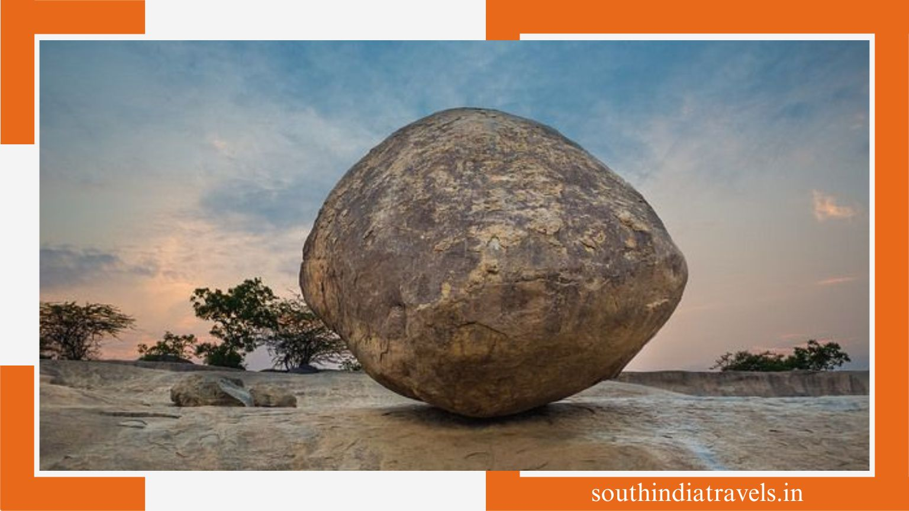
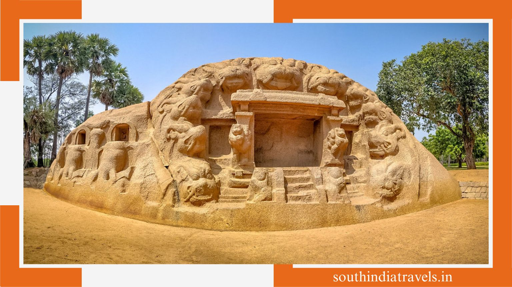
TIGER CAVES
The people love to go to this place because of the architectural structure and the historical significance it has. The structure is more or less like a mandap. The primary deity of the shrine in the Tiger Caves is the goddess Durga. This place is located almost 4 km away from the main city of Mahabalipuram. There are 11 heads of tigers that are picturesquely carved on the walls of the caves. Hence, the place is called Tiger Caves.
MAHABALIPURAM BEACH
Also called Mamallapuram by the locals, the famous Mahabalipuram Beach is located on the shores of the Bay of Bengal and is one of the best tourist places in Mahabalipuram. It features plenty of prominent rock-cut sculptures that are sure to melt your heart! There are stunning caves, massive rathas, chariots, and temples on this beach that attract hundreds of pilgrims, architecture fans, and history geeks to these shores every month and leave them beguiled! Other than exploring these unique Mahabalipuram temples and caves, this beach is a great place to relax and spend quality time with your loved ones.
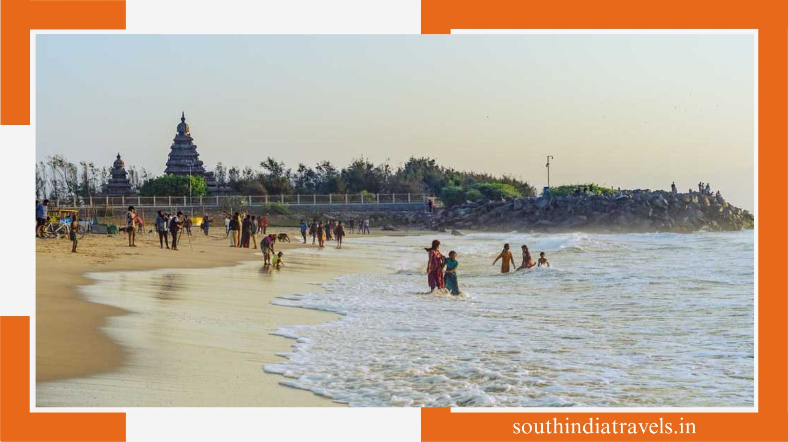
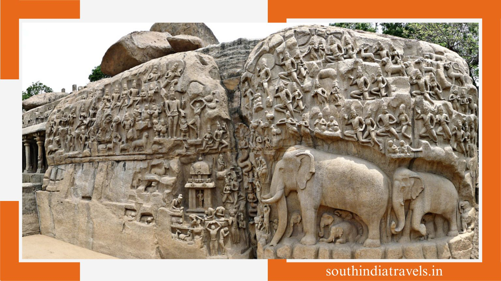
ARJUNA’S PENANCE
Arjuna's Penance is one of the largest rock-cut reliefs in the whole world and one of the most popular places to visit in Mahabalipuram. Also known as the ‘Descent of the Ganges’ owing to its unique structure that depicts these two eminent and symbolic events in Hindu mythology, this attraction is a favourite spot of historians, scholars, academics, and tourists who love ancient Tamilian architecture. What makes it one of the greatest temples in India is its 7th-century art and the unique form of carving and sculpting that has given it its distinct shape and structure and also landed it on the list of sites protected by ASI and UNESCO.
KRISHNA CAVE TEMPLE
Another one of the open-air relics with architecture dating back to the 7th century. As the name suggests, this temple is dedicated to Lord Krishna and is one of the most eye-catching places to visit in Mahabalipuram. The monument found itself to become a part of the Group of Monuments that were taken under the list of UNSECO World Heritage Sites back in 1984. It was during the 16th century that the temple was enclosed by the empire of Vijayanagar. The brilliant and remarkable craftsmanship from that era can be witnessed via the carvings of Lord Krishna lifting the Govardhan Parvat adorning the walls of the cave.
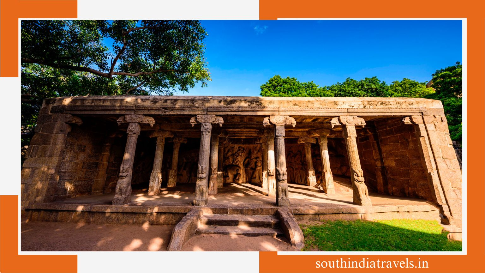
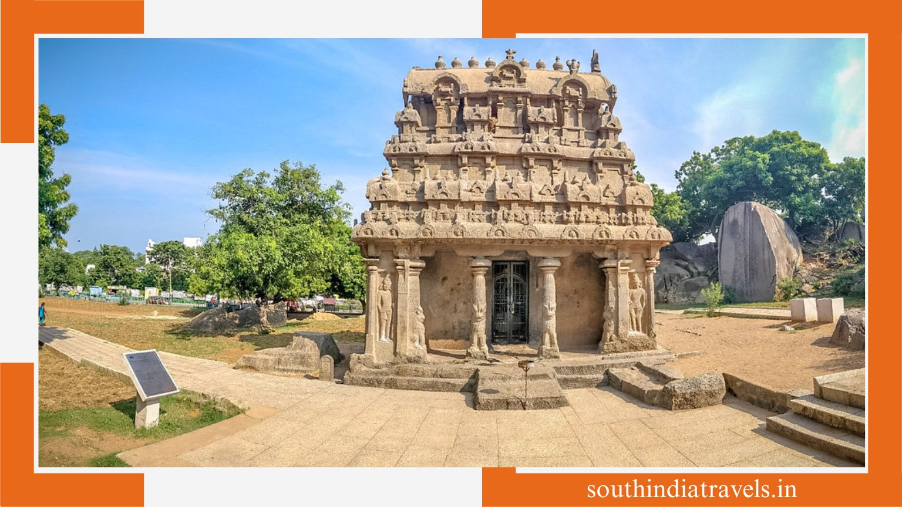
GANESH RATHA TEMPLE
Ganesh Ratha Temple is the apex of rock-cut Indian architecture that was formed using just one rugged element. One of the fascinating places to see in Mahabalipuram, Ganesh Ratha Temple, was also constructed back in the 7th century and is a present-day eye candy for history buffs out there in the country. The temple was built when Mahendravarman I was reigning. This temple is devoted to the god of destruction, Lord Shiva. It is also said that a Shivaling was also placed inside the temple, but later it was removed. In the present day, the temple has devoted every nook and cranny to Lord Ganesha, who is worshipped here. Innumerable Hindu pilgrims do pay a visit to the temple.